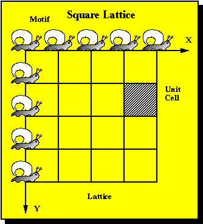
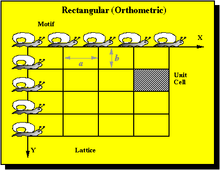
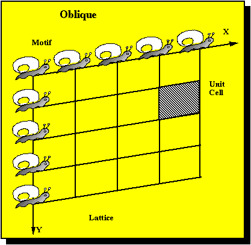
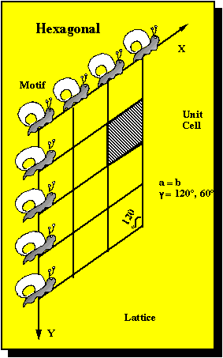
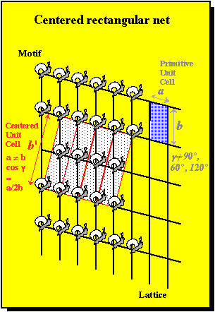

Crystal - a regular geometric solid bounded by smooth surfaces.
Crystalline - homogeneous solid containing long-range three dimensional order. Order implies repetition in space (i.e., found in intervals of equal distance).
Motif - the unit of pattern (e.g., the flower repeated on wall paper or wrapping paper design). In two dimensional space, it is easy to think of the translation of an object in a pattern in any X and Y direction.
Examples: 2-D square lattice. To translate a motif (the snail) in space we employ rules of symmetry.
Rules of symmetry are the way we describe the orderly repetition of a motif in space. In the 2-D example of a square or isoclinic plane lattice, we use the rule or geometric operation of a translation to move the snail an equal distance in an XY coordinate system. The coordinate system is defined by increments whose unit lengths (a and b) are equal and whose axes are at right angles to each other (The Cartesian coordinate system is a square lattice whose unit lengths are equal to one (γ = 90°).
Points or nodes connecting each other collectively form a net that is called a lattice.
Square or Isoclinic (a = b, γ = 90°)

The area (or volume in the case of 3-D) that comprises the unit length's distances between lattice points is known as the unit cell.
The primitive (p) unit cell is that which contains nodes only at the corners of the unit cell and has the smallest possible repeat distance that can be translated along the x and y directions to produce the entire pattern.
Orthoclinic (a not equal to b, γ = 90°)



The choice of a unit cell is a manner of convention. A primitive lattice may also be described as a rectangular lattice with a centered (c) unit cell. The reason for chosing the convention of a non-primative unit cell is to enable description of pattern using higher symmetry operations (more on this later).

Symmetry element - locus of points or point that aid visualizing the symmetrical repeat of a motif.
Symmetry operation - is the act of moving the motif about the element.
One type of a geometric operation that reproduces a motif is a rotation. The object is to create a pattern by moving the motif about an imaginary axis through some angle ( a). The axis is the element and rotation is the operation.
The amount of rotational symmetry is designated by an integer (n) from 1 to infinity. n is defined by 360° divided by the number of rotational degrees in the operation. Remember, you must return to the original position of the motif.
A good example can be seen by viewing a beer can. The bottom appears with an infinte amount of rotational symmetry while the top view appears to have an n equal to one.
Because of geometrical constraints (all the polyhedron must be space occupied) the internal order of a crystal is limited to 1-fold, 2-, 3-, 4-, 6-fold axis (i.e., n = 1, 2, 3, 4, or 6).
An example of a 4-fold rotation operation is given here
The example below combines two operations, including a mirror plane reflection and a translation that is known as a glide plane translation (g). The elements for a glide symmetry (a plane and an axis in this case) must occupy a common place in 3-D space.
Operations and element without translations are summarized below
Symmetry operations - rotation, reflection and inversion
Symmetry elements - rotation axis, mirror plane (m) and symmetry center (i)
{kind=link}
{kind=link}
{kind=link}
{kind=link}
{kind=link}